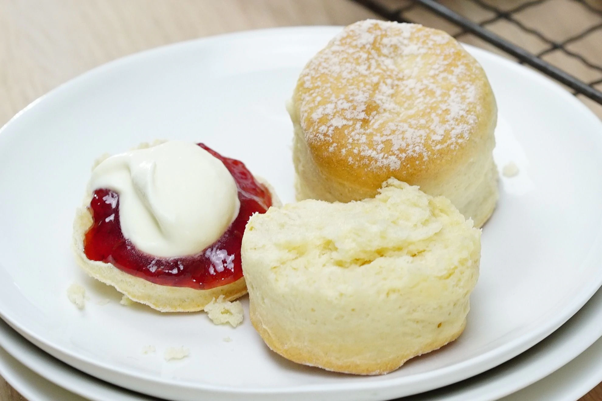

Easy Scones
Recipe from https://www.taste.com.au/recipes/basic-scones/

Fill your home with the smell of freshly baked scones.
This classic favourite is sure to be a crowd pleaser.
Ingredients
- plain flour
- 3 cups self-raising flour
- 80g butter
- 1.5 cups milk
- jam
- cream
Instructions
- Preheat over to 200 deg.
- Rub butter into the flour.
- Add milk.
- Gently knead dough.
- Lightly dust baking tray and lay out dough.
- Bake for 20 minutes or until golden brown.
- Serve warm with jam and cream.
Go back to main page